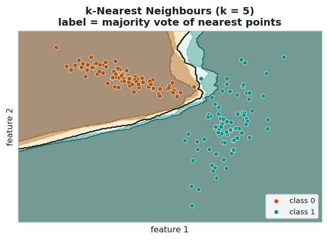
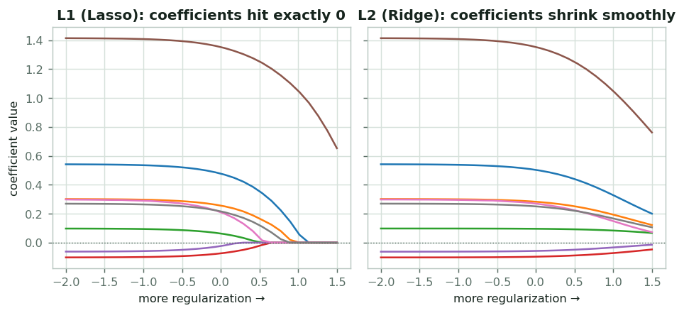
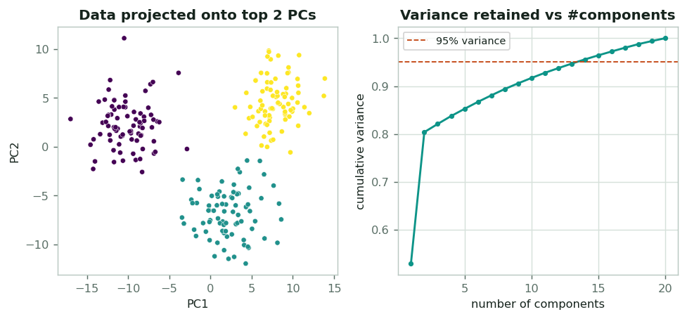
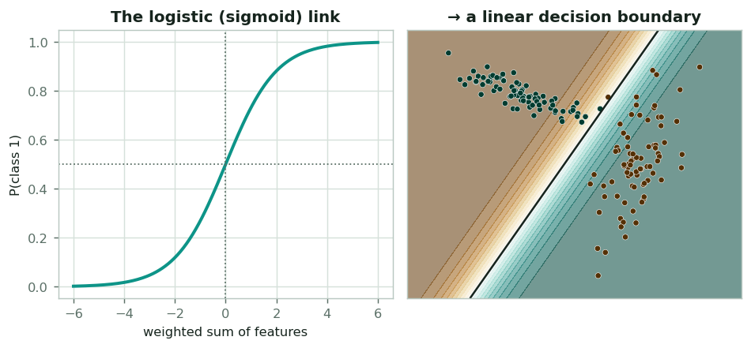
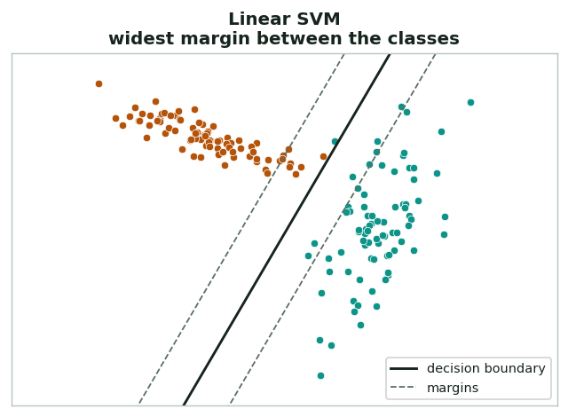
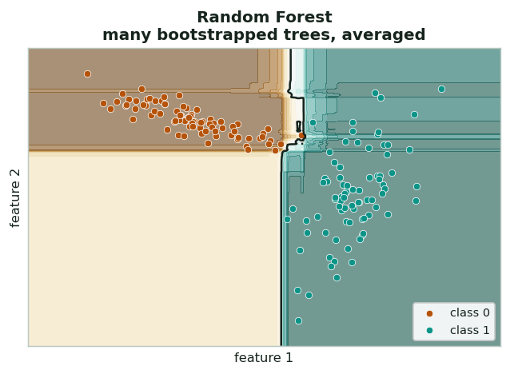
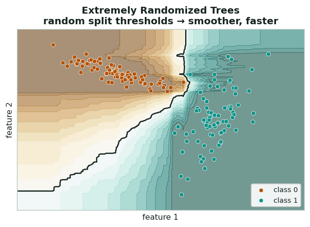
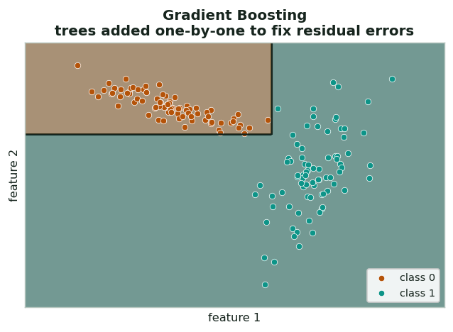
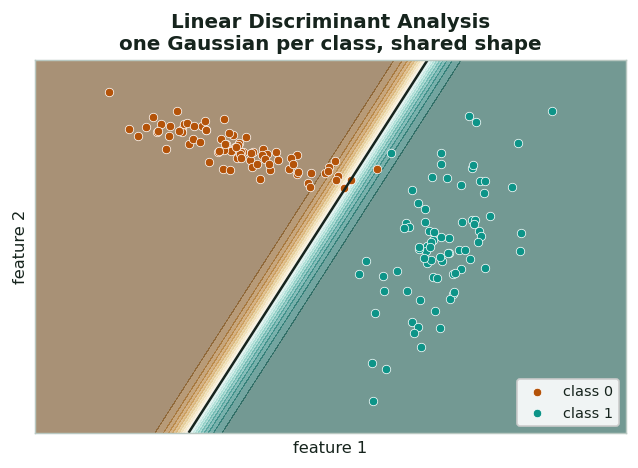
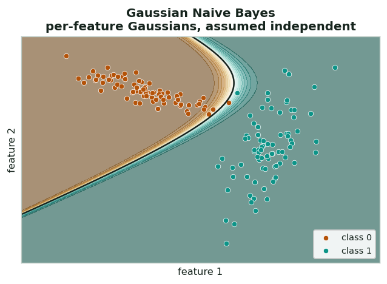

Classification models, explained
Classification asks: given a slide's features, which category is it: high vs low tumor grade, tumor vs normal, mutated vs wild-type? The project runs ten laptop-friendly classifiers side by side. This page explains how each draws its decision, plus the shared ideas: decision boundaries, regularization, ROC/AUC, and the PCA step they all share.
The building blocks
What "a classifier" really produces
Every classifier carves feature space into regions and assigns a class to each. The line (or curved surface) between regions is the decision boundary. The plots on this page show that boundary on a simple 2-feature toy set so you can see how each model "thinks": linear models draw straight lines, while neighbour- and tree-based models draw wiggly ones. Real slides live in thousands of dimensions, but the intuition carries over.


Keeping models from memorizing noise
With 9,216 features and as few as 26 slides, a model can fit the training data perfectly and learn nothing real. Regularization penalizes large coefficients to keep the model simple. L1 (Lasso) pushes many weights to exactly zero (feature selection); L2 (Ridge) shrinks them all smoothly. Logistic regression is run in both flavours, and the same idea drives Ridge and the SVM's margin.
The score we report
Most classifiers output a probability, not just a label. Sweeping the decision threshold traces an ROC curve (true-positive vs false-positive rate). The area under it (AUC) summarizes performance in one number: 0.5 is chance, 1.0 is perfect, and it's threshold-independent — ideal for small, balanced cohorts. The validated grade finding (AUC = 0.80) is exactly this.


From 9,216 features to a manageable few
Before any classifier, features are standardized and run through Principal Component Analysis, which finds the directions of greatest variation and keeps enough of them to retain 95% of the variance. This shrinks thousands of correlated embedding dimensions into a compact set, fighting overfitting. Crucially, PCA is refit inside each CV fold so no test information leaks into training.
The classification models
All run single-threaded on a StandardScaler → PCA(95%) → classifier pipeline.
k-Nearest Neighbours (KNN)
In plain terms. Ask the 5 most similar past slides how they were labeled and go with the majority vote.
What it does. To classify a slide, it finds the k most similar slides in the training set and takes a majority vote.
How it works. No training "fit" beyond storing the data; at prediction time it measures distance to every training point and uses the nearest k (here 5). The decision boundary (the dividing line between classes) follows the data's shape: highly flexible, with no linearity assumed.
Why it's here. It was the top performer on tumor grade (AUC 0.80). When classes form local clusters in embedding space, "who do I look like?" is a remarkably strong question.
Logistic Regression (L1 & L2)

In plain terms. Draw the straight line that best separates the two groups, then read how far each case sits from it as a probability.
What it does. Models the probability of the positive class as a sigmoid of a weighted sum of features, giving a straight-line boundary.
How it works. It learns one weight per feature by maximizing the likelihood of the labels. A regularization penalty (a built-in tax on large weights that prevents overfitting) keeps it honest: the L1 variant zeroes out most weights (sparse, selective), while the L2 variant shrinks them all smoothly (stable).
Why it's here. A transparent, hard-to-beat linear baseline. L1 logistic regression was the runner-up on grade (AUC 0.73) and shows which features matter.
Ridge Classifier
In plain terms. Fit a straight-line separator but deliberately keep its weights small and cautious, so a few odd slides can't swing it.
What it does. A linear classifier that fits the labels as a regression target with a strong L2 penalty (the smooth "shrink every weight a little" form of regularization).
How it works. Heavy L2 shrinkage makes it very stable when features outnumber samples and are correlated, as is common with embeddings.
Why it's here. A fast, robust linear option that rarely overfits, useful as a sanity check against the more flexible models.
Linear SVM (LinearSVC)

In plain terms. Of all the straight lines that split the two groups, pick the one that leaves the biggest empty buffer on either side.
What it does. Finds the straight boundary that separates the classes with the widest possible margin (the gap between the boundary and the closest cases of each class).
How it works. Only the points nearest the boundary, the "support vectors" that sit right on the edge of the margin, actually shape it; maximizing the margin is a built-in form of regularization that generalizes well in high dimensions.
Why it's here. Max-margin linear models are a natural fit for high-dimensional embeddings; it landed third on grade (AUC 0.72).
Random Forest
In plain terms. Poll hundreds of slightly different decision-tree "experts" and average their votes, so no single quirky tree dominates.
What it does. Averages many decision trees, each grown on a random bootstrap sample with random feature subsets.
How it works. Individual trees overfit; averaging hundreds of de-correlated trees cancels their noise and yields a flexible, non-linear boundary with built-in feature-importance. Because each tree sees different data and features, their errors point in different directions and largely wash out.
Why it's here. A strong non-linear benchmark that can catch interactions linear models miss, though on tiny cohorts it can also overfit.

Extremely Randomized Trees

In plain terms. The same crowd-of-trees idea as a random forest, but each tree splits the data at random cut-points instead of carefully chosen ones, which makes the crowd even more varied.
What it does. Like a random forest, but the split thresholds are chosen at random rather than optimized.
How it works. Extra randomness lowers variance further and trains faster, often giving smoother boundaries: a useful counterpart to the random forest.
Why it's here. A cheap, lower-variance ensemble that pairs well with the random forest for comparison.
Gradient Boosting
In plain terms. Build trees one after another, where each new tree focuses on fixing the cases the previous ones got wrong, like a study group patching its weak spots round by round.
What it does. Builds shallow trees one at a time, each correcting the mistakes of the ensemble so far.
How it works. Gradient descent on the classification loss adds many small tree "nudges"; with enough stages it captures subtle structure (and can overfit if unchecked).
Why it's here. Often the strongest tabular learner, included so the comparison isn't biased toward linear methods.

Linear Discriminant Analysis (LDA)

In plain terms. Picture each class as a fuzzy cloud of points of the same shape, then label a new slide by whichever cloud it falls closer to.
What it does. Models each class as a Gaussian blob (sharing one shape) and classifies by which is more likely.
How it works. The shared-covariance assumption yields a clean linear boundary and a built-in dimensionality reduction; very stable on small data.
Why it's here. A classic, low-variance generative baseline that complements the discriminative linear models.
Gaussian Naive Bayes
In plain terms. Score each feature on its own for how typical it looks for each class, then multiply those scores together as if the features never interact.
What it does. Estimates a simple Gaussian per feature per class and combines them assuming features are independent.
How it works. That "naive" independence assumption is rarely true, but it makes the model extremely fast and surprisingly competitive on small samples.
Why it's here. A near-zero-cost probabilistic baseline; it matched mid-pack on grade (AUC 0.69).
